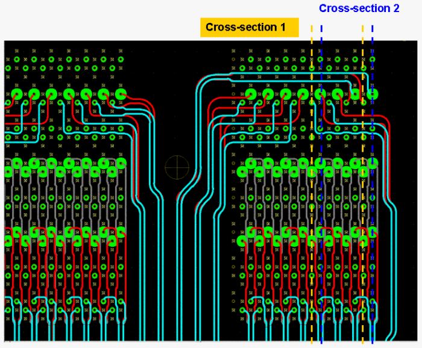
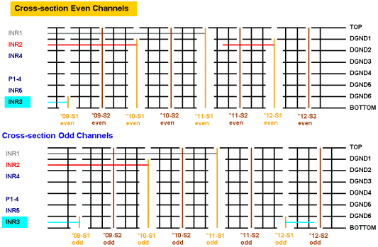

Routing example in 2D
These figures show the recommended wiggled routing in an actual board layout and in two cross-sectional views.

The two dotted lines indicate reference planes for cross-sectional views shown in the figure below.
Cross-section 1 intersects the even-numbered test system channels, and cross-section 2 intersects the odd-numbered test system channels.
Both graphics use the same colors for the traces.

Functional changes
- Introduced before SmarTest 6.3.2